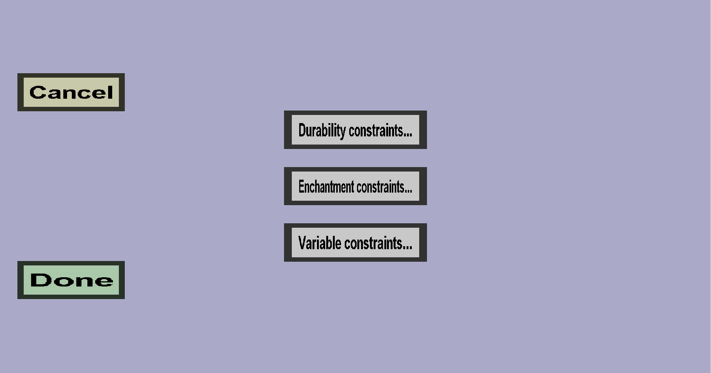

The ingredient constraints menu can be used to add additional constraints to (crafting recipe)
ingredients. It should look like this:

Currently, there are 3 types of constraints:
-
Durability constraints: the remaining durability of the ingredient must be above or below a specific
percentage of its maximum durability (this only makes sense for breakable tools)
-
Enchantment constraints: the ingredient must have specific enchantments, possibly between
specific levels (this only makes sense for items that can be enchanted)
-
Variable constraints: the ingredient must have a specific value for a specific variable.
Variables are a rather advanced feature of this plug-in that make it possible to keep track of which
upgrade recipes have been used on an item.